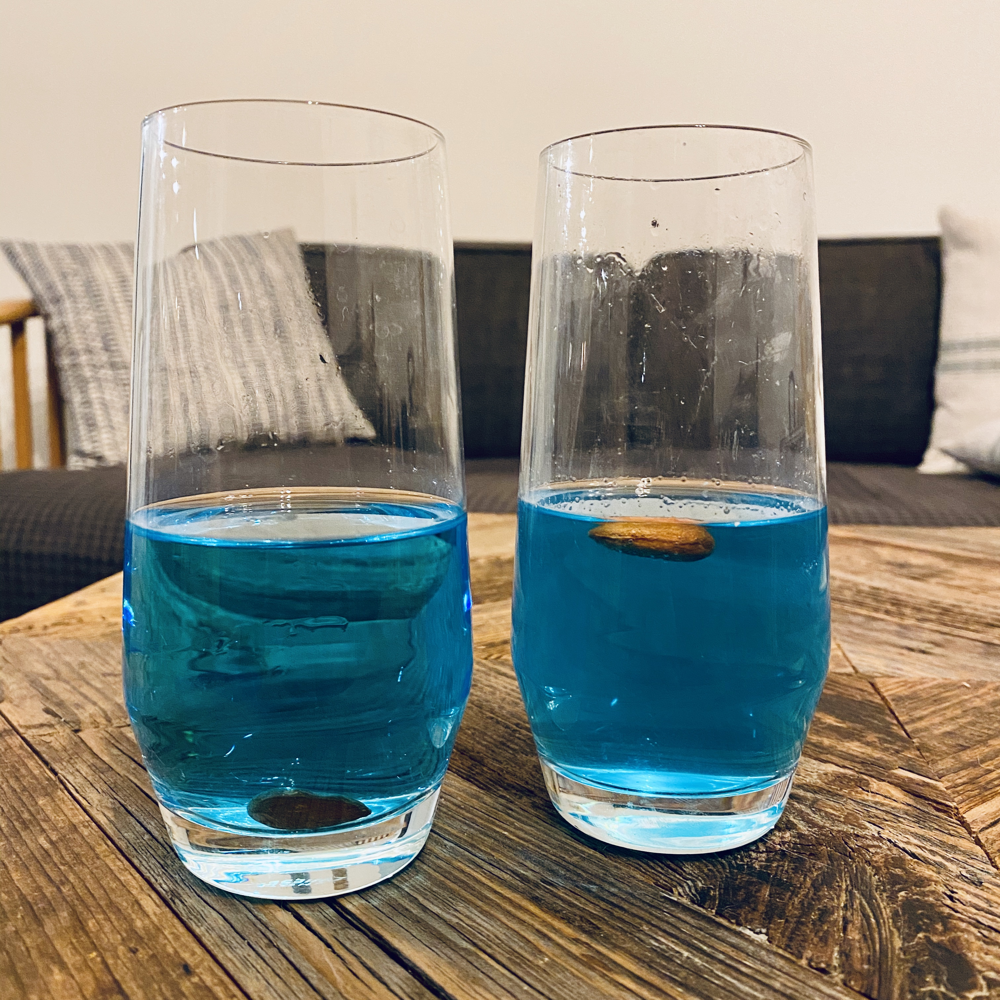
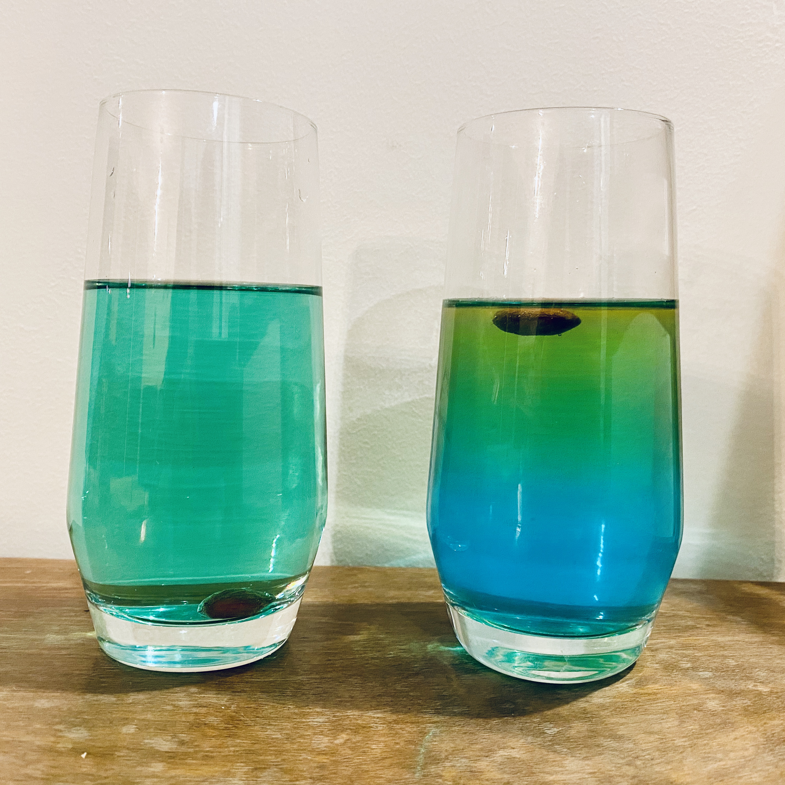

Guide #2 - The Experiment
A bit tricky to setup
Pretty hard to play
About 45 min to finish
This is our second EscapeHome Guide! It's a bit more tricky to set up than some of our others, but worth it for the challenge and the cool little science trick. There's also a story to follow, and the game is probably suitable for more than one player.
You will need:
- Nine see-through glasses, more if possible
- Four different bottles of food colouring. We used Red, Blue, Yellow and Pink, if you're using different food colouring then you should edit the clue document to match the colours you have.
- Quite a lot of salt
- Three jars, containers or tupperwares
- Six almonds (we used brown unshelled ones)
- A smartphone
- A laptop
- Sellotape
- Paper
- A printer (optional)
How it should work
- The player is invited to taste the green drink on the table, which is revealed to be poison. On the back of the label on the poison the player is told they have 45 minutes to take the antidote, which is stored in the fridge. Inside are eight potential antidotes, a clue to unlock the smartphone, and a clue that helps the player find four brown pills.
- With the brown pills, the player also finds two clues. One leads the player to unlock the laptop and then find the final two brown pills and an extra clue. The other clues help the player decide how to test the drinks and find out which are potentially safe, and which are not. One of the clues indicates that the two blue drinks should be avoided.
- The brown pills will float in the antidotes that are salty (which have been 'spiked' with a second poison in the story). Six of the antidotes can be tested with the six brown pills to see if they have been spiked. This helps the player filter out the unsafe antidotes, and also work out the passcode to unlock the smartphone.
- The smartphone gives a final clue that the antidotes must be mixed to be safe, and the result should be the same colour as the poison. To make the correct antidote the player has to mix the blue and yellow antidotes. When the yellow antidote is added to the salty blue one it sits on the surface and is therefore 'not safe to drink'. The non-salty blue antidote mixes easily with the yellow one, and the player wins once they drink some of this mix.
What to do:
- If you have a printer, download and print the pdf document with clues here, it contains the clues you need to set up the game. Make sure you don't print double sided!
- If you want to edit the document, like when you need to use different colours, you can download the original word document here
- If you don't have a printer, copy the clues out onto paper you have at home
- The first step is to cut out the numbers and stick them to eight of the glasses
- Next, into a separate bowl pour out enough hot water to fill four of the glasses half way full, dissolve as much salt into the hot water as possible
- Pour the salty water in the four glasses numbered '1', '3', '6' and '7'
- Pour normal water in the four glasses numbered '2', '4', '5' and '8'
- In the next step we add food colouring to the glasses, we found that a few drops was enough to create a strong colour, but depending on what kind of colouring you are using you may need to add more than this if the colour is too weak
- Place a few drops of red food colouring in the glasses labelled '1' and '4'
- Place a few drops of pink food colouring in the glasses labelled '5' and '7'
- Place a few drops of blue food colouring in the glasses labelled '3' and '8'
- Place yellow food colouring in the glasses labelled '2' and '6', we recommend using double the amount of yellow food colouring that you used for the blue ones
- Cut up the carrot into six little cubes, test that these float in glasses '1', '6' and '7', and sink in glasses '2', '4' and '5'
- Place the eight glasses into the fridge
- Cut out the warning clue that starts with 'Oh dear...' and place it in the fridge with the antidotes
- Cut out the clue labelled 'Lab Memo #378' and place it in the fridge with the antidotes
- Cut out the clue labelled "ANNOUNCEMENT" and stick it to the fridge
- Place two of the brown pills in a jar, container or tupperware, and hide it on some shelves
- Place two more of the brown pills in another jar, container or tupperware, and hide it on some shelves too
- Cut out the clue labelled 'Experiment Notes' and place it on one of the shelves with the brown pills
- Cut out the clue labelled 'Email - From Bruce' and place it on one of the shelves with the brown pills
- Cut out the clue labelled 'Lab Memo #380'. Place the final two brown pills in another jar, container or tupperware, and hide the clue and pills together somewhere in the room.
- On a laptop, use the EscapeHome Lock Screen to setup a hint to the hiding place of the final two brown pills and the clue. Set the password to '21.03.2000'
- Cut out the clue labelled 'Email - From Jane' and hide this somewhere in the room. Using the smartphone, take a picture that hints to the hiding place and add an extra text clue to help. Set the passcode of the phone to '024500'
- Cut out the clue labelled 'Drink Me...' fold the clue so the extra information is hidden, and stick it to the final glass
- In the final glass add some water, along with the blue and yellow food colouring to make the water green
- Place the syringe and the final glass onto the table
- If you have extra glasses, then place these on the table too

The EscapeHome Android App sets up phone lock screens and clues, without changing your pin code each time

The brown almonds will sink in the water antidotes and float in the salty water antidotes, the clues tell the player that the salty antidotes have also been poisoned

In the final steps, the player has to mix antidotes together. The salty antidote and water antidote don't mix easily when added together slowly, but the water antidotes do